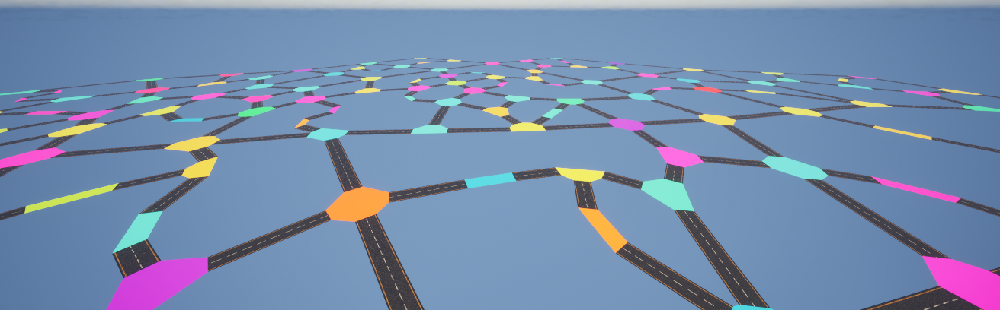
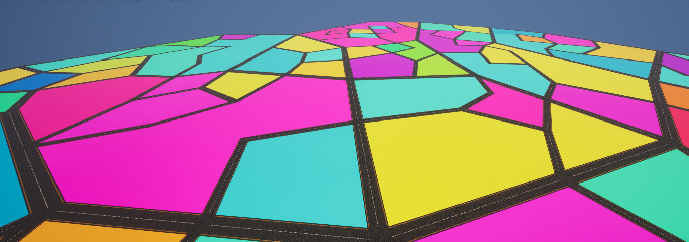
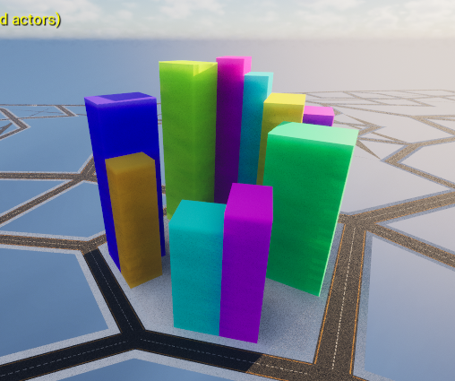

For a 8 wekk long project in my third year at Breda University of Applied Sciences, I built a procedural city generator as an Unreal Engine plugin. Given a boundary and a set of parameters, the system generates a full city layout. Roads, intersections, sidewalks, and buildings, entirely at runtime using procedural mesh generation.
The project was highly iterative, with most systems going through multiple redesigns before reaching a stable result. The focus was on solving geometric and algorithmic challenges rather than visual polish.
The city starts with a road graph. Seed nodes are placed within a random boundary polygon and recursively expanded by connecting neighbors under spatial constraints. The algorithm prevents overlapping roads, limits connection count, and splits long edges to maintain a natural-looking layout.
From the graph data, I generated road meshes and intersection geometry with proper UV mapping. Straight roads were relatively straightforward, but intersections required splitting into separate parts to handle texturing correctly, this was one of the most time-consuming parts of the project.

The road network is split into faces by traversing edges in a clockwise direction until a closed loop is found. These faces represent city blocks. The system then recursively subdivides larger faces by generating new roads within them, creating a layered street hierarchy.

Sidewalks are generated as offset geometry along block edges, with special handling for convex and concave corners. Buildings are placed around the perimeter of each city block with randomized dimensions. The system checks for overlap with roads, sidewalks, and other buildings, and aligns corner buildings to avoid collisions.

City blocks are assigned a region type based on their distance from the center. Each region generates different building styles, for example, residential areas spawn houses with fences, while blocks closer to the center produce taller structures.
This project taught me a lot about graph algorithms, procedural geometry generation, and working with Unreal Engine's procedural mesh system at a low level. Most importantly, it reinforced the value of sketching out problems before jumping into code, several systems only came together after I paused to plan the geometry on paper first.